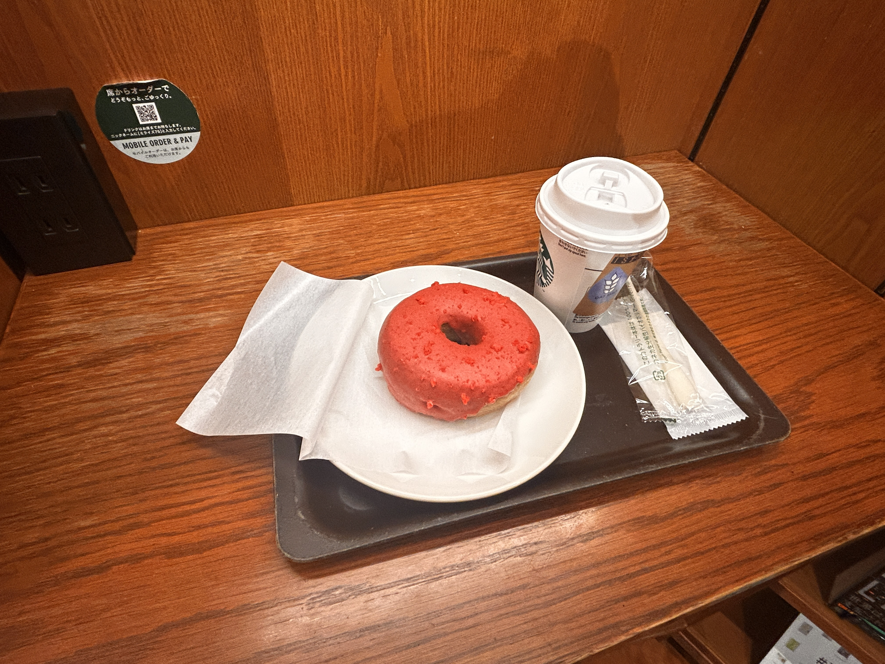
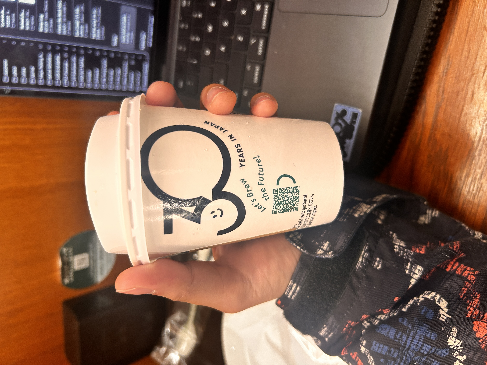

MIND DUMP
2026.04.15
Hello MAYA’SMIND™. Today, I am writing to you from the Starbucks located in Umeda. It’s a Starbucks and a two story bookstore. It is insanely cool and I think I might come here every morning. This was my breakfast:

The barista mixed me the greatest oat milk latte I’ve ever tasted. The thing I like about Japan is the smaller portions, so the small cup is ACTUALLY SMALL. Like, this is what it looked like in my hand:

I really enjoy this place. They’re even blasting that good Chicago jazz.
DESIRES AND IDENTITY
I want to actually make more friends, or at least talk to more people in Japanese outside of school. The only time I really use Japanese is when I’m ordering food or buying things. Plus, I’m feeling the effects of social isolation. I’m anxious all the time, more judgmental of others including myself, and I’m becoming a real d-bag. In order to fix this, this Friday I’m attending a board game event at this cute cafe called “Storybook Cafe Umeda.” Another thing I like about Osaka are the names of places because it’s seems intentional. Storybook cafe is named this because they literally have hundreds of storybooks packed into this little cafe.
I’m going to manifest speaking to more people. My friend Neu was telling me about how she’s had so many experiences where she ends up having a conversation with random people, and I was pretty jealous. I was thinking “why hasn’t that occurred to me?” A: it has, B: I have airpods in like 90% of the time, C: I go straight to my dorm every day, and D: I’m delusional. Henceforth, I shall put myself in more positions to converse with Japanese or other people. I’ve been wanting to talk to the other people in my class, but I was too timid. Notice how I didn’t say “I am timid”? Your words are directly attached to your identity. If I said “I am timid,” my brain will want to prove itself right by being timid. Saying “I was timid” detaches me from that identity, and allows space for a new identity. Just a little MAYASMIND™ tip.
Anyway, I was timid, but now I’m brave. Today, I will speak to the Russian woman in my class who has an incredible amount of tattoos. I love listening to her recite the Japanese alphabet. I don’t have the writing chops to describe this phenom exactly, so the next time it happens I’ll make sure to record her for you guys.
YAY! HAIRCUT!
Another thing I’m gonna do is get a haircut by these cool folk:
I can’t wait to be posted on their Instagram. Maybe I’ll get my 100th follower then.
I don’t know what style I’m gonna get. I straight up texted them “can you guys just pick something for me?” They replied “we have to see your hair first.” So I’m coming in this Saturday, and I’m excited to see what they’re gonna give me. I’m not too worried because honestly anything is better than my hair right now.
NEW SONG!
I made a new song! Take a gander:
I’ve learned something about songmaking throughout this week. I should stop “improving” when it’s already bearable to listen to a hundred times over. I’ve listened to this song basically 24/7 as background music to my daily life. I don’t really notice it, and when I do I’m like “oh that was a cool part.” I genuinely think this is the only way I can finish a song because I’ve spent too long trying to make a song amazing, but end up ruining it because I thought it wasn’t good enough. I would end up pushing it past being enjoyable then I can’t even listen to it once. Start simple and end simple.
ARIGATOU, KENJI-SAN!
After I told him about me, a very smiley half Russian, half Japanese man from Honolulu named Kenji-san told me that I’m a combination of his two favorite people: Chicagoans and Filipinos. He said that Filipinos are so friendly and give him fruit, and Chicagoans just don’t care. I was contemplating on breaking his heart and telling him that I was really raised in Oswego, Illinois, but I enjoyed the compliment too much so I played into it. I was like “yeah, that’s totally me. I couldn’t care less but I’m as good as a button. Lumpia? Adobo? That good Lou Malnati’s deep dish? yeah… that’s soooo me.”
CONFESSIONS
As I was embedding the Instagram post from above, I decided to follow my friend Neu on Instagram. The first post I see stated, “when people think I’m posting for attention, but I’m just love looking at my life with music.” This post itself is harmless and even mellow. But, on the exact day that she posted that, I told her: “some people post on Instagram for attention and just to be seen by others,” then she nodded. Now, based on the context, I think she thought I was talking about her. I was not. I was really talking about myself since I’ve only posted on Instagram for likes and views. I’m frankly quite angry because of this miscommunication. If only there was some way to clear up this tension.
And before you think I’m getting way too worked up about this, I’m a Chicagoan. We don’t care. We don’t get worked up. You are just delusional.
This post was a whole bunch of small points. I think it’s all the short form media I’m consuming. My attention span is like 8.5 seconds. Okay, I need to go do my schoolwork and do more creative things now. Thank you for being here! じゃね！